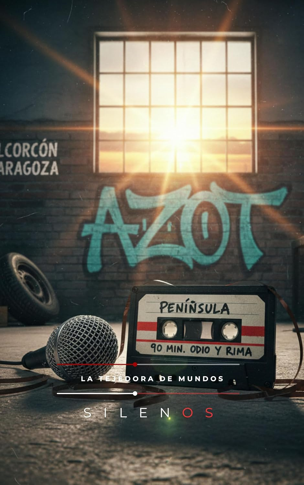

Ciencia Ficción
PENÍNSULA : 90 MINUTOS DE ODIO Y RIMA (CULTURA URBANA nº 1)
Sinopsis
Sumérgete en la Resistencia: Una Odisea de Ritmo, Código y Asfalto PENÍNSULA no es solo una historia; es una frecuencia modulada en medio del silencio, un grito de guerra envuelto en rimas y una carta de amor a la cultura urbana que se niega a ser domesticada. A través de 90 minutos de odio y rima, esta obra recorre los rincones de una España que late bajo una luz distinta: desde las cocheras de Fuencarral hasta los puertos de Alicante y los lofts industriales de Barcelona. ¿Qué encontrarás en estas páginas? Una trama eléctrica: Desde la conexión de la BBS 'Península' hasta los mensajes clandestinos de 'La Voz del Desierto', vive la lucha de una Resistencia Tecnológica contra las sombras del poder. Personajes al límite: Conoce a Byte, Marc Synth, Lúa y la infiltrada Agente Elena Castro en un juego de lealtades, traiciones y pactos sellados sobre billetes de mil pesetas. Atmósfera envolvente: Siente el frío de los Monegros, el eco de los murales de Alcorcón obra de "El Mudito" y la vibración industrial de maquetas grabadas bajo asedio. Un viaje por la geografía de la rima Acompaña a los protagonistas en hitos clave como el Incidente de las Cocheras de Fuencarral o el histórico Pacto de Alicante. Es un relato de supervivencia donde el vinilo de The Last Poets es un tesoro y cada grafiti en la pared es un circuito de esperanza. "La señal sigue viva, palpitando bajo la superficie del presente, una sombra ineludible que se proyecta sobre cada rincón..." ¿Estás listo para sintonizar la señal? Hazte con tu ejemplar y únete a los 5 pilares de la Península.